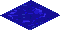
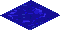

TODOs
move scripts outside the html, have a js file
do the Global Offset stuff for map moving
do the water tile show at the correct location
do all point variables be dicts with x and y attributes
out of bounds for walkers check
add game speed dropdown
 
